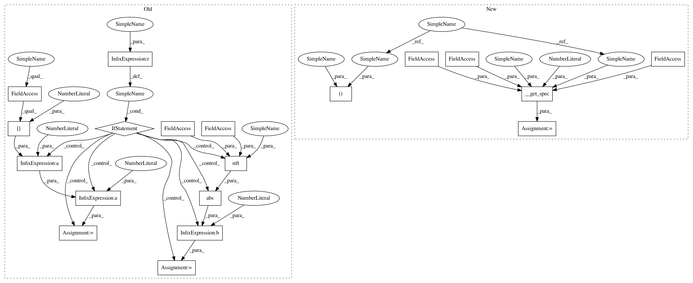

5fcaac3beb4fd536604b7d99b02165a8919978d6,librosa/feature/spectral.py,,logfsgram,#,554
Before Change
"""
// If we don"t have a spectrogram, build one
if S is None:
// By default, use a power spectrogram
S = np.abs(stft(y, n_fft=n_fft, hop_length=hop_length))**2
else:
n_fft = (S.shape[0] - 1) * 2
// If we don"t have tuning already, grab it from S
if "tuning" not in kwargs:
bins_per_oct = kwargs.get("bins_per_octave", 12)
kwargs["tuning"] = estimate_tuning(S=S, sr=sr,
bins_per_octave=bins_per_oct)
After Change
`P[f, t]` contains the energy at pitch bin `f`, frame `t`.
"""
S, n_fft = __get_spec(y=y, sr=sr, S=S, n_fft=n_fft, hop_length=hop_length,
power=2)
// If we don"t have tuning already, grab it from S
if "tuning" not in kwargs:
bins_per_oct = kwargs.get("bins_per_octave", 12)
In pattern: SUPERPATTERN
Frequency: 3
Non-data size: 19
Instances
Project Name: librosa/librosa
Commit Name: 5fcaac3beb4fd536604b7d99b02165a8919978d6
Time: 2015-01-19
Author: brian.mcfee@nyu.edu
File Name: librosa/feature/spectral.py
Class Name:
Method Name: logfsgram
Project Name: librosa/librosa
Commit Name: 5fcaac3beb4fd536604b7d99b02165a8919978d6
Time: 2015-01-19
Author: brian.mcfee@nyu.edu
File Name: librosa/feature/spectral.py
Class Name:
Method Name: melspectrogram
Project Name: librosa/librosa
Commit Name: 5fcaac3beb4fd536604b7d99b02165a8919978d6
Time: 2015-01-19
Author: brian.mcfee@nyu.edu
File Name: librosa/feature/spectral.py
Class Name:
Method Name: logfsgram
Project Name: librosa/librosa
Commit Name: 5fcaac3beb4fd536604b7d99b02165a8919978d6
Time: 2015-01-19
Author: brian.mcfee@nyu.edu
File Name: librosa/feature/spectral.py
Class Name:
Method Name: chromagram